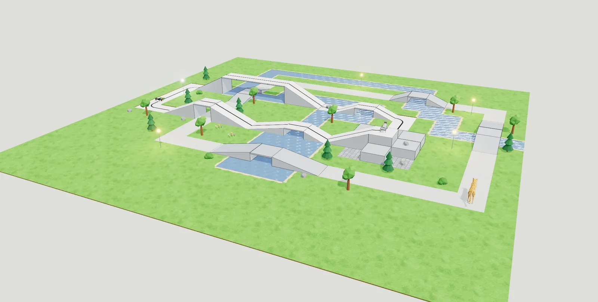

Создай 3D‑мультфильм и запрограммируй его героев
Построй мир, смоделируй детали и оживи всё блоками, как в Scratch. Плюс робототехника и схемы с Arduino — в одной бесплатной программе.
Windows и Linux · русский, English, 中文
- Бесплатно навсегдаБез подписок и рекламы, открытый код
- Без интернетаНи аккаунтов, ни облака — проекты в обычных файлах
- Для школьных ПККачество графики само снижается, если компьютер не успевает
- АвтосохранениеРаз в минуту — работа не пропадёт
- Три языкаРусский, английский, китайский
- Без прав администратораСтавится на Windows без системного администратора
3D-программирование
Герои слушаются твоих блоков
Как спрайты в Scratch, только в объёмном мире. У каждого героя свои способности и свои блоки: чего герой не умеет, того блока у него нет.
- Разговоры и звукиОблачка с репликами, свои голоса у каждого героя, ноты и мелодии.
- Сообщения между героями«Робот доехал — нерпа прыгнула — голубь взлетел»: из этого и складывается история.
- Герои знают, где стоятТрава, песок, дорога или вода под ногами — можно научить нерпу ходить только по дороге.
- Получается играСобытия «когда нажата клавиша» и «когда щёлкнули по мне».
- Как в киноКамера следит за героем, тени, небо, светятся фонари. Кнопка «Видео» записывает ролик, «Снимок» — картинку.

3D-моделирование
Детали для 3D-печати — от шестерёнки до храма
Просто, как в TinkerCad: перетащи фигуру, сделай отверстие, сгруппируй. И много того, чего в TinkerCad нет.
- Готовые механизмыШестерёнки, которые сцепляются; винты и гайки с резьбой по ISO; пружины, колёса, петли. Размеры — числами, зазор уже заложен.
- Эскизы как во взрослом CADЛинии, дуги, кривые, размеры и привязки. Полностью определённый эскиз становится зелёным.
- Выдавливание и вращениеИз контура — деталь или, как на токарном станке, ваза и шахматная фигура.
- СимметрияВключил — и всё, что делаешь с фигурой, повторяется зеркально.
- ЭкспортSTL и OBJ — в слайсер 3D-принтера, DXF и SVG — для лазерной резки.
- «В симулятор»Одна кнопка — и деталь стоит на поле: падает, её толкает робот, видит датчик.
Робототехника
Собери робота и трассу для него
Виртуальный полигон для соревнований: к заезду по линии можно готовиться дома, даже без набора.
- Робот и датчикиДатчик линии, дальномер, датчик касания, датчик света и фонарик — каждый ведёт себя как настоящий.
- Трасса и рельефТайлы с линией, площадки, рампы и мосты ярусами. Робот заезжает на рампу и может упасть с края.
- Местность кистьюТрава, песок, камень, дорога, вода, деревья. Датчик линии видит покрытия разной яркостью.
- Свет и физикаЛампы со своими программами; предметы падают и сталкиваются, робот их толкает.
- Свои роботыМоды добавляют другие модели роботов — без программирования.
Схемотехника
Arduino до пайки
Собери схему на макетной плате, запрограммируй блоками и посмотри, как она работает. Ничего не сгорит по-настоящему.
- ДеталиArduino Uno, макетная плата, резисторы с цветными полосками, светодиоды, потенциометр, сервопривод.
- Честная электрикаРасчёт по законам Ома и Кирхгофа: светодиод без резистора перегорит, а программа подскажет, где замыкание.
- Настоящий кодБлоки сразу превращаются в C++ для Arduino IDE — можно залить в настоящую плату.
- Монитор портаВидно, что выводит программа, а ручку потенциометра можно крутить мышью.
Для школ и кружков
Сделано для урока
Регистрация не нужна — только установщик. Всё остальное уже внутри.
Примеры проектов
Готовые сцены и схемы, с которых удобно начать занятие.
Четыре темы оформления
Под проектор, под тёмный класс и под вкус ученика.
Одна программа на весь курс
От первой детали до робота, который сам проходит трассу, — без переходов между сервисами.
Первая публичная версия уже на подходе
Скоро здесь появятся установщики для Windows и Linux (.deb и AppImage). Программа бесплатная и останется такой.